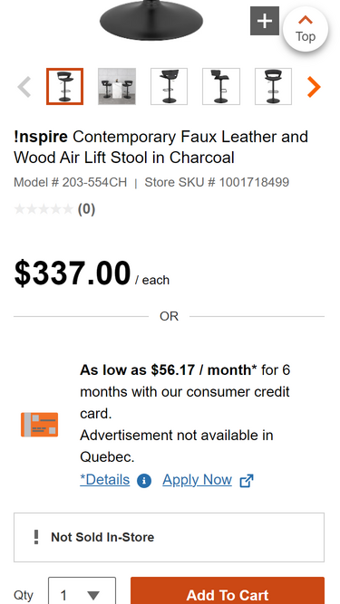
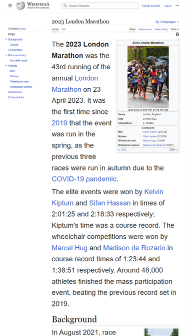

Visual Hierarchy
Home Depot
Home Depot's Website 
I believe the principle of visual hierarchy is followed in Home Depot's website as there is a clear structure on how items are presented and the final purpose. In this case, the image presents the selling item, the price font size is bigger to highlight it from all other details and the add to cart button is pretty visible thanks to the contrast made. It seems to me that this visual structure works really good from a customer's perspective.
White space and clean design
Wikipedia
Wikipedia's Website 
For this case, I believe Wikipedia is a great example of a clean design, using white spaces to focus attention on the content shown, which is the section and ensuring images are visible without any constrast problems.
Contrast
RBC
RBC's Website
I like using this example as the design of the website is simple but contrast colors were used wisely, specially for the sign in button (that button is the reason why people go to the site, so it has to be easy to spot).